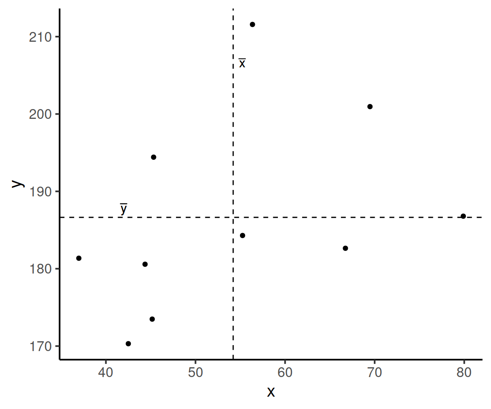

Covariance and correlation
- Understand when and how to calculate the summary statistics of covariance and correlation, and how to do this in R.
- Learn what different strengths and directions of correlation look like when visualised as a scatterplot of two quantitative variables.
- Learn how to conduct a test to determine whether a correlation is different from zero.
Recap
In weeks 7-10 of semester 2, we were dealing with a quantitative response variable and a categorical explanatory variables.
| Test | Description |
|---|---|
| One-sample t-test | tests whether the mean of a sample (\(\mu\)) is significantly different from an hypothesised value (\(\mu_0\), typically equal to 0) |
| Two-samples t-test | tests whether the difference in the means of two samples (\(\mu_1 - \mu_2\)) is significantly different from an hypothesised value (\(\mu_0\), typically equal to 0) |
| Paired-samples t-test | tests whether the mean of the differences computed from paired samples (\(\mu_d\)) is significantly different from an hypothesised value (\(\mu_0\), typically equal to 0) |
Last week, we began working with categorical response variables. We discussed the chi-square goodness-of-fit test and the chi-square test of independence:
| Test | Description |
|---|---|
| \(\chi^2\) goodness-of-fit | tests whether categorical variable conforms with hypothesized proportions |
| \(\chi^2\) independence | tests whether categorical variable is related to another categorical variable |
This week, we will cover associations between two quantitative variables.
Two quantitative variables
Over the past few weeks we’ve looked at different types of variables (outlined above in the recap). Thinking of previous ways we’ve visualised the data (histograms, bar plots). Now we’re focusing on two continuous variables.
How would you visualise two quantitative variables such as age and height?
How would you most often visualise the relationship between two quantitative variables?
What should we fill this plot with?

Variance vs Covariance
Covariance and variance are two commonly used terms in statistics - they sound similar but they’re quite different! It’s worth looking at both variance and covariance to understand their differences and when to use them.
Variance: measures how spread out are the data values around the mean.
Covariance: measures how the values of one variable are associated values in the other variable.
Variance
Variance measures how spread out values are in a given dataset. The variance is the average squared deviation from the mean. The sample variance \(s^2\), it is an unbiased estimator of the population variance.
Unbiased estimator
An estimator of a given parameter is said to be unbiased if its expected value is equal to the true value of the parameter. In other words, an estimator is unbiased if it produces parameter estimates that are, on average, correct.
For example, The sample variance (\(s^2\)) is an unbiased estimator for the population variance (\(\sigma^2\)) as per definition: \[ \mathbb{E}[s^2]=\sigma^2 \]
Variance is used when you wish to quantify how spread out values are in a dataset. The higher the variance value, the more spread out they are around the mean.
Formula (sample variance)
The formula to find the variance of a sample (\(s^2\)) is:
\[ s^2 = \frac{\sum (x_i - \overline{x})^2}{n-1} \] where:
- \(sum\): the sum over all data values
- \(\overline{x}\): the sample mean
- \(x_i\): the \(i\)th observation in the sample
- \(n\): sample size
Variance example
ex1 <- c(1, 2, 3, 4, 5, 5, 12, 14, 20, 13,
6, 7, 10, 13, 14, 14, 18, 19, 22, 24) # dataset with 20 values
var(ex1)## [1] 48.74737ex2 <- c(55, 34, 43, 65, 65, 43, 49, 24, 19, 10,
6, 13, 19, 24, 25, 30, 36, 43, 49, 55) # another dataset of 20 values
var(ex2) ## [1] 316.45For the first example dataset, the sample variance is 48.75 and the second dataset has a sample variance of 316.45
As the variance is larger for the second example dataset, this indicates that the values in the second data set are more spread out vs the values in the first example set.
Covariance
Covariance measures how the values in one variable are associated with the values of another variable. That is, what values of one variables are typically observed with other values of another variable.
Covariance is a measure of association between two numeric variable.
Positive association (positive covariance) indicates that higher values of one variable tend to be observed with higher values of the other variable, or that lower values of one variable tend to be associated with lower values of the other variable.
Negative association (negative covariance) indicates that higher values of one variable tend to be observed with lower values of the other variable, or that lower values of one variable tend to be associated with higher values of the other variable.
Formula (sample covariance)
\[ \text{Cov}(X,Y) = \frac{\sum (x_i - \overline{x})(y_i - \overline{y})}{n-1} \]
where:
- \(\sum\): is the sum
- \(x_i\): the \(i\)th observation of variable \(X\)
- \(\overline{x}\): sample mean of variable \(X\)
- \(y_i\): the \(i\)th observation of variable \(Y\)
- \(\overline{y}\): sample mean of variable \(Y\)
- \(n\): total number of pairwise observations
A visual explanation
Consider the following scatterplot:
Now let’s superimpose a vertical dashed line at the mean of \(x\) (\(\bar{x}\)) and a horizontal dashed line at the mean of \(y\) (\(\bar{y}\)):

Now let’s pick one of the points, call it \(x_i\), and show \((x_{i}-\bar{x})\) and \((y_{i}-\bar{y})\).
Notice that this makes a rectangle.
As \((x_{i}-\bar{x})\) and \((y_{i}-\bar{y})\) are both positive values, their product \((x_{i}-\bar{x})(y_{i}-\bar{y})\) is positive.
In fact, for all these points in red, the product \((x_{i}-\bar{x})(y_{i}-\bar{y})\) is positive (remember that a negative multiplied by a negative gives a positive):
And for these points in blue, the product \((x_{i}-\bar{x})(y_{i}-\bar{y})\) is negative:
Now take another look at the formula for covariance:
\[\mathrm{Cov}(x,y)=\frac{\sum (x_{i}-\bar{x})(y_{i}-\bar{y})}{n-1}\]
It is the sum of all these products divided by \(n-1\). It is the average of the products!
Covariance example
Suppose we have a an example dataset with 20 values:
example_data <- tibble(ex1, ex2)
example_data## # A tibble: 20 x 2
## ex1 ex2
## <dbl> <dbl>
## 1 1 55
## 2 2 34
## 3 3 43
## 4 4 65
## 5 5 65
## 6 5 43
## 7 12 49
## 8 14 24
## 9 20 19
## 10 13 10
## 11 6 6
## 12 7 13
## 13 10 19
## 14 13 24
## 15 14 25
## 16 14 30
## 17 18 36
## 18 19 43
## 19 22 49
## 20 24 55Calculating the covariance manually, we’ll first need to calculate the mean score for ex1 and ex2:
example_data <- example_data %>%
mutate(
mean_ex1 = mean(ex1),
mean_ex2 = mean(ex2)
)
example_data## # A tibble: 20 x 4
## ex1 ex2 mean_ex1 mean_ex2
## <dbl> <dbl> <dbl> <dbl>
## 1 1 55 11.3 35.4
## 2 2 34 11.3 35.4
## 3 3 43 11.3 35.4
## 4 4 65 11.3 35.4
## 5 5 65 11.3 35.4
## 6 5 43 11.3 35.4
## 7 12 49 11.3 35.4
## 8 14 24 11.3 35.4
## 9 20 19 11.3 35.4
## 10 13 10 11.3 35.4
## 11 6 6 11.3 35.4
## 12 7 13 11.3 35.4
## 13 10 19 11.3 35.4
## 14 13 24 11.3 35.4
## 15 14 25 11.3 35.4
## 16 14 30 11.3 35.4
## 17 18 36 11.3 35.4
## 18 19 43 11.3 35.4
## 19 22 49 11.3 35.4
## 20 24 55 11.3 35.4Next, to create three new columns which are:
- ex1 value - mean of ex1: the \((x_i - \overline{x})\) part
- ex2 value - mean of ex2: the \((y_i - \overline{y})\) part
- the product of 1. and 2.: calculating the \((x_i - \overline{x})(y_i - \overline{y})\) part
example_data <- example_data %>%
mutate(
xixbar = ex1 - mean_ex1,
yiybar = ex2 - mean_ex2,
prod = xixbar * yiybar
)
example_data## # A tibble: 20 x 7
## ex1 ex2 mean_ex1 mean_ex2 xixbar yiybar prod
## <dbl> <dbl> <dbl> <dbl> <dbl> <dbl> <dbl>
## 1 1 55 11.3 35.4 -10.3 19.6 -202.
## 2 2 34 11.3 35.4 -9.3 -1.35 12.6
## 3 3 43 11.3 35.4 -8.3 7.65 -63.5
## 4 4 65 11.3 35.4 -7.3 29.6 -216.
## 5 5 65 11.3 35.4 -6.3 29.6 -187.
## 6 5 43 11.3 35.4 -6.3 7.65 -48.2
## 7 12 49 11.3 35.4 0.700 13.6 9.55
## 8 14 24 11.3 35.4 2.7 -11.4 -30.6
## 9 20 19 11.3 35.4 8.7 -16.4 -142.
## 10 13 10 11.3 35.4 1.7 -25.4 -43.1
## 11 6 6 11.3 35.4 -5.3 -29.4 156.
## 12 7 13 11.3 35.4 -4.3 -22.4 96.1
## 13 10 19 11.3 35.4 -1.3 -16.4 21.3
## 14 13 24 11.3 35.4 1.7 -11.4 -19.3
## 15 14 25 11.3 35.4 2.7 -10.4 -27.9
## 16 14 30 11.3 35.4 2.7 -5.35 -14.4
## 17 18 36 11.3 35.4 6.7 0.650 4.35
## 18 19 43 11.3 35.4 7.7 7.65 58.9
## 19 22 49 11.3 35.4 10.7 13.6 146.
## 20 24 55 11.3 35.4 12.7 19.6 250.Next, to sum the products and divide by \(n-1\):
example_data %>%
summarise(
prod_sum = sum(prod),
n = n()
)## # A tibble: 1 x 2
## prod_sum n
## <dbl> <int>
## 1 -241. 20-241.1/(20-1)## [1] -12.68947As always, R has a useful function so we don’t have to calculate covariance by hand! We’ll use the cov function to make sure we get the same results.
The function cov takes in two variables x = and y =, in this case we want each example variable in our example_data dataset (ex1 and ex2) as all the other columns and values were made to calculate the covariance formula by hand
cov(example_data$ex1, example_data$ex2)## [1] -12.68947As we have a negative covariance value, it means that the values of one variable tend to be observed with values of the opposite sign of the other variable.
You may informally think of a negative covariance value as meaning that the movement in one variable is opposite to the movement of the other variable. For instance:
- if X is moving upwards, Y is moving downwards
- if X is moving downwards, Y is moving upwards
If we have a positive covariance value, the opposite is true: the movement in one variable is the same to the movement of the other variable.
Correlation (\(r\))
Correlation can be thought of as a standardised covariance. It ranges from \(-1\) to \(+1\), on which the distance from zero indicates the strength of the relationship. Similar to covariance, positive/negative values reflect the nature of the relationship.
Correlation coefficient
The correlation coefficient is a standardised number which quantifies the strength and direction of the linear relationship between 2 variables:
- in a population, it is denoted by the Greek letter \(\rho\) (“rho”)
- in a sample, it is denoted by \(r\)
Formula
To calculate \(r\), we use the following formula:
\[ r_{x,y} = \frac{\text{Cov}(x,y)}{s_x s_y} \] This can be expanded to:
\[ r_{x,y} = \frac{\frac{\sum{(x_i - \bar{x})(y_i - \bar{y})}}{n-1}}{\sqrt{\frac{\sum{(x_i - \bar{x})}^2}{n-1}} \sqrt{\frac{\sum{(x_i - \bar{x})}^2}{n-1}}} \]
But don’t fret! This can be rearranged to:
\[ r_{x,y}=\frac{1}{n-1} \sum \left( \frac{x_{i}-\bar{x}}{s_x} \right) \left( \frac{y_{i}-\bar{y}}{s_y} \right) \] This rearranged formula is very similar to the formula for covariance, but the values \((x_i-\overline{x})\) are divided by the standard deviation \((s_x)\), as are the values \((y_i - \overline{y})\) divided by \(s_y\).
In other words, your are multiplying the z-scores of \(X\) and the z-scores of \(Y\)
\[ r_{x,y}=\frac{\sum z_{x_i} z_{y_i}}{n-1} \]
This standardises all the values so that they are expressed as the distance in standard deviations from their means (\(\overline{x}\) and \(\overline{y}\)).
Properties of correlation coefficients
- \(-1 \leq r \leq 1\)
- The sign indicates the direction of association
- positive correlation (\(r > 0\)) means that the values of one variable tend to be higher when values of the other variable are higher
- negative correlation (\(r < 0\)) means that values of one variable tend to be lower when values of the other variable are higher
- no linear correlation (\(r \approx 0\)) means that the higher/lower values of one variable do not tend to occur with higher/lower values of the other variable
- The closer \(r\) is to \(\pm1\), the stronger the linear relationship
- \(r\) has no units and does not depend on the units of measurement
- The correlation between \(x\) and \(y\) is the same as the correlation between \(y\) and \(x\)
Correlation example
Earlier, we calculated that \(\text{Cov}(ex1,ex2) = -12.689\). To calculate the correlation, we simply divide this number by the standard deviations of the two variables.
example_data %>%
summarise(
s_ex1 = sd(ex1),
s_ex2 = sd(ex2)
)## # A tibble: 1 x 2
## s_ex1 s_ex2
## <dbl> <dbl>
## 1 6.98 17.8-12.689/(6.981932*17.78904)## [1] -0.1021643We can also use the cor() function to calculate our correlation coefficient:
cor(example_data$ex1, example_data$ex2)## [1] -0.1021681The numbers are the same (phew). But what does this value mean? As stated above, a negative \(r\) value indicates that as one variable increases, the other decreases. Also note, this value of -0.102 is close to 0, so the relationship is very small.
Testing significance of the correlation coefficient
Now that we’ve seen the formulae for covariance and correlation, as well as their associated functions in R, we can use a statistical test to establish the probability of finding an association this strong by chance alone.
Hypotheses
Null hypothesis
\[ H_0: \rho = 0 \]
I.e. there is no linear association between \(x\) and \(y\) in the population.
Alternative hypothesis
- (two-sided) \(H_1: \rho \neq 0\) (there is a linear association between \(x\) and \(y\) in the population)
- (left-tailed) \(H_1: \rho < 0\) (there is a negative linear association between \(x\) and \(y\) in the population)
- (right-tailed) \(H_1: \rho > 0\) (there is a positive linear association between \(x\) and \(y\) in the population)
Test statistic
Our test statistic is another \(t\) statistic (you can never escape them). The formula for which depends on both the observed correlation (\(r\)) and the sample size (\(n\)):
\[ t = r\sqrt{\frac{n-2}{1-r^2}} \]
where:
- \(r\): correlation coefficient
- \(n\): sample size
p-value
To calculate the p-value for our \(t\)-statistic, it’s the usual format:
- \(P(t_{n-2} \leq t)\)
- \(P(t_{n-2} \geq t)\)
- \(2 \times P(t_{n-2} \geq |t|)\)
where \(t_{n-2}\) denotes a \(t\)-distribution with \(n - 2\) degrees of freedom.
# correlation coefficient
r <- cor(example_data$ex1, example_data$ex2)
# sample size
n <- nrow(example_data)
# t-statistic
t_stat = r * sqrt((n - 2) / (1 - r^2))
#calculate p-value for t, with df = n-2
2 * (1 - pt(abs(t_stat), df = 18))## [1] 0.6682039Unsurprisingly, there is no significant relationship between the two made-up variables.
Alternatively, we can use the cor.test() function in R:
cor.test(x = example_data$ex1, y = example_data$ex2,
alternative = "two.sided")##
## Pearson's product-moment correlation
##
## data: example_data$ex1 and example_data$ex2
## t = -0.43574, df = 18, p-value = 0.6682
## alternative hypothesis: true correlation is not equal to 0
## 95 percent confidence interval:
## -0.5211279 0.3564692
## sample estimates:
## cor
## -0.1021681Example: A hypothetical memory test
Our data for this example is from a (hypothetical) study on memory. Twenty participants studied passages of text (c500 words long), and were tested a week later. The testing phase presented participants with 100 statements about the text. They had to answer whether each statement was true or false, as well as rate their confidence in each answer (on a sliding scale from 0 to 100). The dataset contains, for each participant, the percentage of items correctly answered, and the average confidence rating. Participants’ ages were also recorded.
Read in the data from https://uoepsy.github.io/data/recalldata.csv - it is a .csv file - and look at the dimensions of the data as well as some summary statistics.
Plot the relationship between the percentage of items answered correctly (recall_accuracy) and participants’ average self-rating of confidence in their answers (recall_confidence).
Plot the relationship between recall accuracy and age.
We’re going to calculate the covariance between recall accuracy and recall confidence.
Create 2 new columns in the memory recall data, one of which is the mean recall accuracy, and one which is the mean recall confidence.
Remember to assign it using recalldata <- ... otherwise it will just print out the data with the new columns, rather than store it anywhere.
Now create three new columns which are:
- recall accuracy minus the mean recall accuracy - this is the \((x_i - \bar{x})\) part.
- confidence minus the mean confidence - and this is the \((y_i - \bar{y})\) part.
- the product of i. and ii. - this is calculating \((x_i - \bar{x})\)\((y_i - \bar{y})\).
Finally, sum the products, and divide by \(n-1\)
cov()
Check that you get the same results using cov() function.
Hint: cov() can take two variables cov(x = , y = ). Think about how you can use the $ to pull out the variables we are using here.
We calculated above that \(\mathrm{Cov}(\texttt{recall_accuracy}, \texttt{recall_confidence})\) = 118.077.
To calculate the correlation, we simply divide this by the standard deviations of the two variables. \(s_{\texttt{recall_accuracy}} \times s_{\texttt{recall_confidence}}\).
Try doing this now.
cor()
Just like R has a cov() function for calculating covariance, there is a cor() function for calculating correlation!
They work in a similar way. Try using cor() now and check that we get the same result as above (or near enough, remember that we rounded some numbers above).
Correlation matrix
Lots of psychological datasets will have many many related variables. For instance, if a researcher was interested in job satisfaction, they might give a questionnaire to participants, and we would end up with a dataset with lots of variables (one for each question).
We will often want to quickly summarise the relationship between all possible pairs of variables. In the lecture, we saw how to do this using the hetcor() function from the polycor package, giving it a set of variables (or a whole dataset).
You probably won’t have the package polycor yet, so you’ll need to install it first.
- Install the
polycorpackage. You only need to install it once, and you will have access to it forever by calling it vialibrary() - Load the
polycorpackage.
- Read in the job satisfaction data from https://uoepsy.github.io/data/jobsat.csv. It is a .csv.
- Create a correlation matrix using the function
hetcor(), and name itcormat.
- Pull out the correlation matrix using
cormat$correlations.
It is often to difficult to get a good view of the strength and direction of correlations when they are all printed out.
Luckily, we can easily visualise a correlation matrix as a heatmap.
- Install the
pheatmappackage.
- Load the
pheatmappackage. - visualise your correlation matrix using the function
pheatmap().
Cautions!
Correlation is an invaluable tool for quantifying relationships between variables, but must be used with care.
Below are a few things to be aware of when we talk about correlation.
Caution 1
Correlation can be heavily affected by outliers. Always plot your data!
The two plots below only differ with respect to the inclusion of one observation. However, the correlation coefficient for the two sets of observations is markedly different.
Caution 2
Zero correlation (\(r = 0\)) means no linear association. The variables could still be otherwise associated. Always plot your data!
The correlation coefficient in Figure 1 below is negligible, suggesting no linear association. The word “linear” here is crucial - the data are very clearly related.
Figure 1: Unrelated data?

Figure 2: Datasaurus!
Source: Matejka, J., & Fitzmaurice, G. (2017, May). Same stats, different graphs: generating datasets with varied appearance and identical statistics through simulated annealing. In Proceedings of the 2017 CHI Conference on Human Factors in Computing Systems (pp. 1290-1294).
Caution 3
Correlation does not imply causation!
You will have likely heard the phrase “correlation does not imply causation.” There is even a whole wikipedia entry devoted to the topic.
Just because you observe an association between x and y, we should not deduce that x causes y
An often cited paper (See Figure 4) which appears to fall foul of this error took a correlation between a country’s chocolate consumption and its number of nobel prize winners to suggest a causal relationship between the two:
Figure 4: Chocolate consumption causes more Nobel Laureates?
“since chocolate consumption has been documented to improve cognitive function, it seems most likely that in a dose-dependent way, chocolate intake provides the abundant fertile ground needed for the sprouting of Nobel laureates”
[Messerli, Franz. Chocolate Consumption, Cognitive Function, and Nobel Laureates. The New England Journal of Medicine 2012; 367:1562-4, (http://www.nejm.org/doi/full/10.1056/NEJMon1211064)]
Example: Sleep and daytime functioning
A researcher is interested in the relationship between hours slept per night and self-rated effects of sleep on daytime functioning. She recruited 50 healthy adults, and collected data on the Total Sleep Time (TST) over the course of a seven day period via sleep-tracking devices.
At the end of the seven day period, participants completed a Daytime Functioning (DTF) questionnaire. This involved participants rating their agreement with ten statements (see Table 1). Agreement was measured on a scale from 1-5.
An overall score of daytime functioning can be calculated by:
- reversing the scores of items 4, 5 and 6.
- Taking the sum of scores across items.
- Subtracting the summed scores from 50 (the max possible score).
Note: Step 1 is undertaken because those items reflect agreement with positive statements, whereas the other ones are agreement with negative statements. In step 3, subtracting the summed scores from 50 will simply reverse the overall score, meaning that higher scores will indicate better perceived daytime functioning.
The data is available as a .csv at https://uoepsy.github.io/data/sleepdtf.csv.
| Item | Statement |
|---|---|
| Item_1 | I often felt an inability to concentrate |
| Item_2 | I frequently forgot things |
| Item_3 | I found thinking clearly required a lot of effort |
| Item_4 | I often felt happy |
| Item_5 | I had lots of energy |
| Item_6 | I worked efficiently |
| Item_7 | I often felt irritable |
| Item_8 | I often felt stressed |
| Item_9 | I often felt sleepy |
| Item_10 | I often felt fatigued |
Read in the data, and calculate the overall daytime functioning score, following the criteria outlined above. Make this a new column in your dataset.
Hint: to reverse items 4, 5 and 6, we we need to make all the scores of 1 become 5, scores of 2 become 4, and so on…
What number satisfies all of these equations?:
- ? - 5 = 1
- ? - 4 = 2
- ? - 3 = 3
Calculate the correlation between the total sleep time (TST) and the overall daytime functioning score.
Conduct a test to establish the probability of observing a correlation this strong in a sample of this size assuming the true correlation to be 0.
Write a sentence or two summarising the results.
Create a correlation matrix of the items in the daytime functioning questionnaire.
You will first need to select the relevant columns.
Visualise your correlation matrix using pheatmap() from the pheatmap package.
Spend a bit of time thinking about what this correlation matrix shows you, and read the item statements again (Table 1).
Try creating and visualising a new correlation matrix using the reversed items 4, 5, and 6. What do you expect to be different?
What items on the daytime functioning questionnaire correlate most strongly with the Total Sleep Time (TST)?
Open-ended: Think about this study in terms of causation.
Claim: Less sleep causes poorer daytime functioning.
Why might it be inappropriate to make the claim above based on these data alone? Think about what sort of study could provide stronger evidence for such a claim.
Things to think about:
- comparison groups.
- random allocation.
- measures of daytime functioning.
- measures of sleep time.
- other (unmeasured) explanatory variables.
Glossary
- Variance. A measure of how spread out values are in a data set.
- Covariance. A measure of how changes in one variable area associated with changes in a second variable.
- Linear relationship. An equation, when graphed, gives you a straight line - a straight line relationship between two variables. Also known as a linear association.
- Correlation. Measures the linear relationship between two variables \(x\) and \(y\). It has a value between \(-1\) and \(1\).